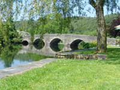
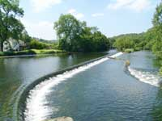
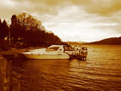
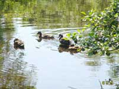

Newby Bridge Tourist Information

{kind=link}
This small village, which takes its name from the five arched stone bridge spanning the River Leven, does not have shops or a Post Office, but, it does have the benefit of being a prime location at the southern end of Lake Windermere.
It is a station stop on the very popular 3 ½ mile long Haverthwaite Steam Railway, and is only a couple of miles from the ferry landing stage of Lakeside.

{kind=link}
TheA590/5092 leads to the Furness Peninsula and resorts of the West Coast. Newby Bridge with its fine range of camping/caravan sites, bed&breakfasts, guest houses and hotels, provides an excellent example of the quality accommodation which the Lake District and Cumbria has on offer.
How to get there:  
{kind=link}
{kind=link}
By rail: From the West Coast Main Line, change at Oxenholme for Windermere.
From Windermere, take one of the many buses or taxis. The journey is about 8 miles.
Alternatively, from the West Coast Main line, change at Preston or Carnforth for Grange over Sands. From Grange, the journey by road is approximately 8 miles
By road: Situated on the A590 on the main road to Barrow in Furness, Newby Bridge is easily accessible from the M6 motorway, exiting at J36.
Or via the “A” roads of 591, 592 and 595 if traveling from the Northern and Central Lakes.
Attractions in Newby Bridge |
Aquarium of the Lakes
Uncover the secret world of the Lakes. More than 30 spectacular, naturally themed habitats show the diversity of life in the lakes.
Phone: +44 (0)15395 30153
www.aquariumofthelakes.co.uk
Fell Foot Park
A lovely setting on the eastern shore of Lake Windermere with picnic areas, children’s activities, play area and boat hire. Fine views of the lake and fells. The Springtime display of daffodils is glorious. For details email fellfootpark@nationaltrust.org.uk
Sizergh Castle and Garden
A historic castle and stunning gardens. Tasty local food available. Wheelchair access.
Hill Top
Home of Beatrix Potter. This is a popular attraction with only a small car park and waiting for entry to the house is possible at times. Please collect a National Trust ticket from the office in the car park and note there is a daily quota of tickets available.
Email: hilltop@nationaltrust.org.uk
The Beatrix Potter Gallery
Situated in nearby Hawkshead. View original water colours and sketches; see a display about the making of the film” Miss Potter”. Discover more about her life.
Email: beatrixpottergallery@nationaltrust.org.uk
Fishing
Esthwaite Water Trout Fishery. Year round fishing from the waters of the largest stocked lake in the North West. Open 7 days.
www.hawksheadtrout.com
Lakeland Motor Museum at Backbarrow, near Newby Bridge
A collection of cycles, vintage veteran and classic cars, scooters, mopeds, engines, motor cycles and a pre-war garage re-creation plus a fine collection of automobilia. Also on display is the Campbell Bluebird Exhibition paying tribute to Sir Malcolm Campbell and his son Donald who between them held 21 World Land & Water speed records. Open daily until 24 December from 10 am – 5.30 pm. (4.30pm from end of October)
Food and Drink in Newby Bridge |
Transportation in Newby Bridge |